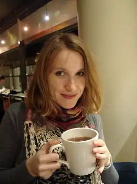

Викладач англійської мови, дослідник дитячої літератури. Закінчила Львівський національний університет та Кембрідзький університет у Великобританії.
У 2008 році заснувала у Львові мовну школу "Англійська для бізнесу".
Із 2012 року вивчає та викладає дитячу літературу в докторантурі в Швеції. Написала збірку оповідань "Окуляри і кролик-гном", яку адресовано читачам 10-12 років. Книжку в електронному форматі можна завантажити безкоштовно. Автори проекту сподіваються популяризувати серед юних читачів якісну сучасну українську літературу, знайомити їх із цікавими дитячими й підлітковими письменниками та робити книжки для дітей і підлітків доступнішими в складних економічних умовах. До книжки ввійшли оповідання сучасних українських письменниць Саші Кочубей, Галини Ткачук, Ані Хромової, Тані Стус, Олександри Орлової, Альони Ярової, Валентини Захабури, Наталі Ясіновської, Ольги Купріян, Оксани Лущевської, Маші Сердюк та Надії Білої. Ілюстрації до збірки створила художниця Марія Гермашева.